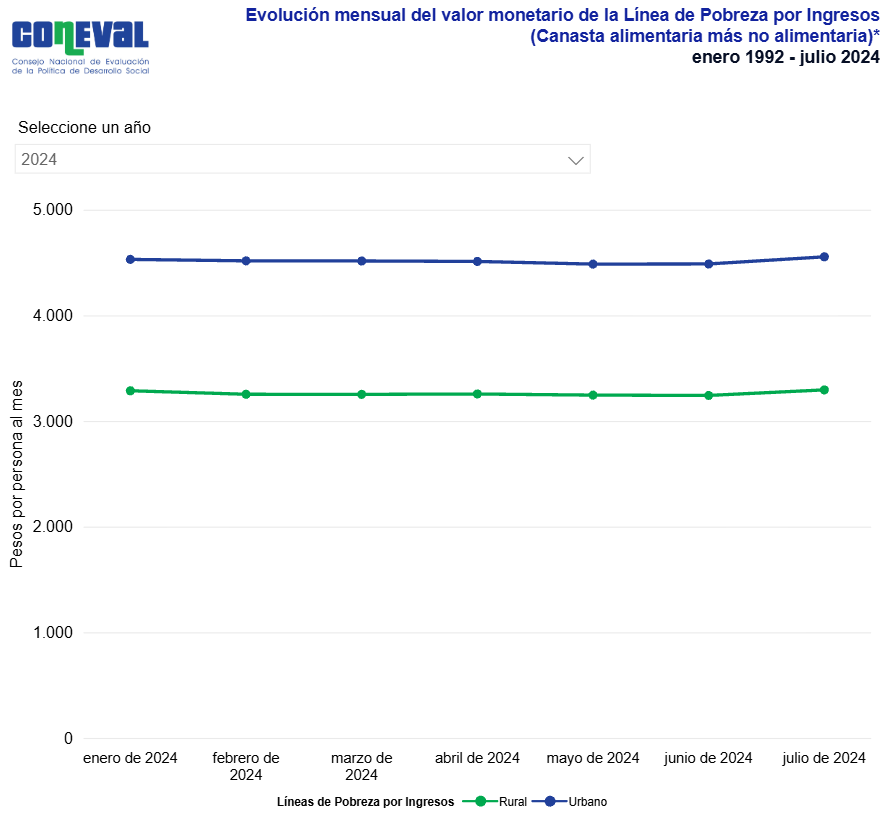

David Díaz Paz y Puente | 650794 "Doy mi palabra que he realizado esta actividad con integridad académica."
Proyecto Final – Unidad 1¶
1) Planteamiento del problema y contexto de los datos¶
La pobreza en México constituye una problemática multidimensional y persistente. De acuerdo con el Consejo Nacional de Evaluación de la Política de Desarrollo Social (CONEVAL), una persona se encuentra en situación de pobreza cuando presenta al menos una carencia social (rezago educativo, acceso a servicios de salud, acceso a la seguridad social, calidad y espacios de la vivienda, servicios básicos en la vivienda y acceso a la alimentación) y, simultáneamente, su ingreso es insuficiente para adquirir los bienes y servicios necesarios para satisfacer sus necesidades alimentarias y no alimentarias (CONEVAL, s. f.). En el caso de la pobreza extrema, la condición se agrava al acumular un mayor número de carencias y contar con un ingreso tan reducido que, aún destinandolo por completo a la alimentación, no permitiría cubrir los requerimientos nutricionales mínimos para una vida saludable (CONEVAL, s. f.).
En este contexto, el presente estudio propone el desarrollo de modelos de regresión orientados a estimar y analizar el ingreso trimestral per cápita de los hogares como una aproximación cuantitativa a su situación socioeconómica, a partir de las características y categorías asociadas a viviendas en México. De esta manera, se busca identificar en qué medida las condiciones estructurales, los servicios disponibles y la calidad habitacional se relacionan con el nivel de ingreso del hogar, permitiendo aproximar su posición dentro del espectro socioeconómico.
El análisis se enfoca en Nuevo Leon, Mexico, durante 2024, y utiliza una base de datos construida a partir de la Encuesta Nacional de Ingresos y Gastos de los Hogares (ENIGH) del INEGI, integrando variables de vivienda y de ingreso mediante el identificador común de vivienda. En la práctica, el ingreso per cápita estimado se contrastará con umbrales oficiales de referencia definidos por CONEVAL para el ámbito urbano y rural, conocidos como Línea de Pobreza por Ingresos (LPI), que equivale al valor monetario total de la canasta alimentaria más la canasta no alimentaria por persona al mes, y Línea de Pobreza Extrema por Ingresos (LPEI), que equivale al valor monetario de la canasta alimentaria por persona al mes, lo cual permite interpretar los resultados del modelo en términos de vulnerabilidad económica. Para efectos de este trabajo se considera la LPI urbana mensual reportada por CONEVAL: 4,640.16 pesos (CONEVAL, 2025, p. 2). Convertida a una escala trimestral, multiplicamos el valor por 3, lo que resulta en 13,920.48 pesos. Este último será utilizado como punto de comparación para clasificar de manera operativa la situación por ingresos de los hogares dentro del conjunto de datos.

Figura 1. Valores monetarios mensuales por persona a pesos corrientes en México en la primera mitad del año 2024.
2) Exploración y comprension del dataset¶
import pandas as pd
import numpy as np
df = pd.read_csv('base_pobreza.csv')
diccionario = pd.read_csv('diccionario_datos.csv')
print(df.shape)
(3767, 31)
El dataframe (df) se compone de 3767 observaciones (filas) y 31 variables (columnas).
print(df.info())
<class 'pandas.core.frame.DataFrame'> RangeIndex: 3767 entries, 0 to 3766 Data columns (total 31 columns): # Column Non-Null Count Dtype --- ------ -------------- ----- 0 folioviv 3767 non-null int64 1 tipo_viv 3767 non-null object 2 mat_pared 3767 non-null int64 3 mat_techos 3767 non-null int64 4 mat_pisos 3767 non-null int64 5 cocina 3767 non-null int64 6 cocina_dor 3662 non-null float64 7 cuart_dorm 3767 non-null int64 8 num_cuarto 3767 non-null int64 9 lugar_coc 3767 non-null int64 10 ab_agua 3538 non-null float64 11 dotac_agua 3538 non-null float64 12 excusado 3767 non-null int64 13 uso_compar 3740 non-null float64 14 sanit_agua 3740 non-null float64 15 bano_comp 3767 non-null object 16 bano_excus 3767 non-null object 17 bano_regad 3767 non-null object 18 drenaje 3767 non-null int64 19 disp_elect 3767 non-null int64 20 combus 3767 non-null int64 21 eli_basura 3767 non-null int64 22 tenencia 3767 non-null int64 23 estim_pago 3767 non-null object 24 escrituras 2824 non-null float64 25 tot_resid 3767 non-null int64 26 tot_hom 3767 non-null int64 27 tot_muj 3767 non-null int64 28 est_socio 3767 non-null int64 29 ing_tri 3767 non-null float64 30 ing_tri_pc 3767 non-null float64 dtypes: float64(8), int64(18), object(5) memory usage: 912.4+ KB None
Cada fila representa una observacion identificada por folioviv (identificador de la vivienda). Las variables se enfocan en condiciones físicas de la vivienda (materiales de pared/techo/piso), servicios basicos (agua, drenaje, electricidad, sanitario, basura), características de ocupación (tenencia, escrituras), estructura del hogar (residentes totales y por sexo) y, finalmente, un bloque económico que sirve como objetivo para el modelo de pobreza: ing_tri (ingreso trimestral total) y ing_tri_pc (ingreso trimestral per capita).
En cuanto a tipos de dato, predominan variables int64 (18) que en este contexto representan códigos de catálogo (categorías numéricas; se explorarán a profundidad con el diccionario del conjunto), float64 (8) donde aparecen ingresos y también variables con faltantes, y object (5) son variables categóricas que se leyeron como texto (por ejemplo tipo_viv, bano_comp, bano_excus, bano_regad, estim_pago). Sobre la completitud, varias columnas presentan valores faltantes: cocina_dor tiene 105 nulos (3767-3662), ab_agua y dotac_agua tienen 229 nulos cada una (3767-3538), uso_compar y sanit_agua tienen 27 nulos cada una (3767-3740), y el caso mas relevante es escrituras con 943 nulos (3767-2824), es decir, alrededor de una cuarta parte del conjunto.
Es importante mencionar que para la variable estim_pago, aunque parezca no tener huecos dentro de la base de datos, la realidad es que al ser de tipo object, pandas cuenta esas cadenas como “no nulas”, por eso df.info() te dice 3767 non-null aunque “visualmente” parezcan faltantes.
A continuación se presenta un diccionario que describe cada variable de manera contextual a la base de datos.
print(diccionario)
nombre_campo tipo nemónico catálogo \
0 Identificador de la vivienda C folioviv NaN
1 Tipo de vivienda C tipo_viv tipo_viv
2 Material de paredes C mat_pared mat_pared
3 Material de techos C mat_techos mat_techos
4 Material de pisos C mat_pisos mat_pisos
5 Tiene cocina C cocina si_no
6 Utiliza cocina de dormitorio C cocina_dor si_no
7 Cuartos dormitorio N cuart_dorm NaN
8 Número de cuartos N num_cuarto NaN
9 Lugar donde cocinan C lugar_coc lugar_coc
10 Abastecimiento de agua C ab_agua ab_agua
11 Dotación de agua C dotac_agua dotac_agua
12 Tiene excusado C excusado excusado
13 Uso compartido del sanitario C uso_compar si_no
14 Sanitario conexión agua C sanit_agua sanit_agua
15 Baño con excusado y regadera N bano_comp NaN
16 Baño solo con excusado N bano_excus NaN
17 Baño solo con regadera N bano_regad NaN
18 Destino de drenaje C drenaje drenaje
19 Disponibilidad eléctrica C disp_elect disp_elect
20 Tipo de combustible C combus combus
21 Eliminación de basura C eli_basura eli_basura
22 Tipo de tenencia de la vivienda C tenencia tenencia
23 Estimación del pago de renta N estim_pago NaN
24 Escrituras de la vivienda C escrituras escrituras
25 Total de residentes de la vivienda N tot_resid NaN
26 Total de residentes hombres N tot_hom NaN
27 Total de residentes mujeres N tot_muj NaN
28 Estrato socioeconómico C est_socio est_socio
29 Ingreso trimestral N ing_tri NaN
30 Ingreso trimestral per capita N ing_tri_pc NaN
rango_claves
0 [0100001901-3260593818]
1 [1-7]
2 [1-8]
3 [01-10]
4 [1-3]
5 [1-2]
6 [1-2]
7 [1-99]
8 [1-99]
9 [1-6]
10 [1-7]
11 [1-5]
12 [1-3]
13 [1-2]
14 [1-3]
15 [0-9]
16 [0-9]
17 [0-9]
18 [1-5]
19 [1-5]
20 [1-7]
21 [1-8]
22 [1-6]
23 [1-999999999]
24 [1-4]
25 [1-99]
26 [1-99]
27 [1-99]
28 [1-4]
29 [0.00-999999999999.99]
30 [0.00-999999999999.99]
El diccionario describe un conjunto de 31 variables organizadas en torno a tres ejes principales: características físicas de la vivienda, disponibilidad de servicios básicos y condiciones socioeconomicas del hogar. A su vez, estas variables se clasifican en dos tipos de dato: C (categórico) y N (numérico).
La mayor parte de las variables se reporta como categórica (tipo C). Sin embargo, al observar la estructura de df, se identifica que una proporción importante de estas variables aparece almacenada con tipo int64. Esto es consistente con el uso de códigos numéricos para representar categorías, por lo que no deben interpretarse como valores continuos. En consecuencia, para una lectura adecuada del diccionario y para asegurar un tratamiento correcto en el análisis y en la modelación, es necesario complementar la interpretación mediante los catálogos asociados a cada variable, los cuales describen el significado de cada clave.
Con el fin de mantener el reporte conciso y evitar extensiones innecesarias, a continuación se presenta el acceso a los catálogos correspondientes a cada variable incluida en el estudio.
- ab_agua
- combus
- disp_elect
- dotac_agua
- drenaje
- eli_basura
- escrituras
- est_socio
- excusado
- lugar_coc
- mat_pared
- mat_pisos
- mat_techos
- sanit_agua
- tenencia
- tipo_viv
Los catálogos proporcionan la correspondencia entre las claves numéricas y el significado descriptivo de cada categoría, lo cual permite interpretar correctamente variables codificadas como valores enteros. Estos rangos varían según la variable; por ejemplo, ab_agua cuenta con siete opciones (1–7) que describen la fuente de abastecimiento: (1) servicio público de agua, (2) pozo comunitario, (3) pozo particular, (4) pipa, (5) otra vivienda, (6) lluvia y (7) otro lugar.
print(df.head(5))
folioviv tipo_viv mat_pared mat_techos mat_pisos cocina cocina_dor \ 0 1906156202 2 8 10 2 1 2.0 1 1906156203 2 8 10 2 1 2.0 2 1906156204 1 8 10 3 1 2.0 3 1906156407 1 8 10 2 1 2.0 4 1906156408 1 7 10 3 1 2.0 cuart_dorm num_cuarto lugar_coc ... eli_basura tenencia estim_pago \ 0 2 4 1 ... 1 4 3000 1 2 4 1 ... 1 1 2 2 5 1 ... 1 4 3000 3 1 3 1 ... 1 4 3000 4 3 4 1 ... 1 1 escrituras tot_resid tot_hom tot_muj est_socio ing_tri ing_tri_pc 0 1.0 2 1 1 2 27890.10 13945.0500 1 NaN 4 1 3 2 38571.42 9642.8550 2 1.0 4 1 3 2 59340.65 14835.1625 3 1.0 2 1 1 2 45244.56 22622.2800 4 NaN 6 3 3 2 61483.68 10247.2800 [5 rows x 31 columns]
Por último, tras revisar la estructura del dataframe, así como una muestra representativa de sus datos, es posible definir la metodología inicial que se seguirá para la limpieza y preparación de la información. Para esta etapa se identifican como principales retos del df la presencia de datos faltantes, la codificación numérica de variables categóricas y la existencia de valores atípicos (outliers), los cuales deberán abordarse de manera sistemática para garantizar la calidad del análisis y la validez de los modelos posteriores.
3) Preparación y tratamiento de datos¶
Problema A: valores faltantes¶
Recordando la completitud de los datos, las variables que presentan valores faltantes son las siguientes:
uso_comparysanit_agua(27 nulos = 3767-3740)cocina_dor(105 nulos = 3767-3662)ab_aguaydotac_agua(229 nulos = 3767-3538)estim_pago(470 nulos = 3767-3297)
Adicionalmente, falta estudiat preparar la variable escrituras, desde encontrar los valores nulos y reemplazarlos hasta actualizar el tipo de dato.
A partir de esta información, surge la necesidad de implementar métodos de imputación acordes con la naturaleza de cada variable que presente valores faltantes. Se descarta la alternativa de eliminar observaciones, ya que ello implicaría una reducción significativa del tamaño muestral y podría introducir un sesgo de selección, al asumir implícitamente que la ausencia de datos es completamente aleatoria.
print(diccionario.loc[[13, 14, 6, 10, 11, 23, 24]])
nombre_campo tipo nemónico catálogo rango_claves 13 Uso compartido del sanitario C uso_compar si_no [1-2] 14 Sanitario conexión agua C sanit_agua sanit_agua [1-3] 6 Utiliza cocina de dormitorio C cocina_dor si_no [1-2] 10 Abastecimiento de agua C ab_agua ab_agua [1-7] 11 Dotación de agua C dotac_agua dotac_agua [1-5] 23 Estimación del pago de renta N estim_pago NaN [1-999999999] 24 Escrituras de la vivienda C escrituras escrituras [1-4]
Para variables categóricas con valores faltantes marginales se utilizará imputación por moda, dado su bajo impacto sobre la distribución.
## Imputacion por moda para variables marginales (no se toca 'escrituras' ni 'estim_pago' porque se tratara aparte)
# Columnas con NA (excluyendo 'escrituras' porque se tratara aparte)
na_cols = [c for c in df.columns if df[c].isna().any() and c != "escrituras" and c != "estim_pago"]
print("Columnas con NA (excepto escrituras):", na_cols)
for c in na_cols:
mode_series = df[c].mode(dropna=True)
if mode_series.empty:
# Si por alguna razon no hay moda (columna vacia), se omite
print(f"[WARN] {c}: no se encontro moda. Se omite.")
continue
mode_value = mode_series.iloc[0]
df[c] = df[c].fillna(mode_value)
print("\nImputacion por moda aplicada a variables marginales.")
Columnas con NA (excepto escrituras): ['cocina_dor', 'ab_agua', 'dotac_agua', 'uso_compar', 'sanit_agua'] Imputacion por moda aplicada a variables marginales.
En el caso de escrituras, primero realizamos un conteo de las observaciones nulas que contiene:
nulos_antes = df["escrituras"].isna().sum()
print(f"Nulos en 'escrituras' antes de imputar: {nulos_antes}")
Nulos en 'escrituras' antes de imputar: 943
Debido a la alta proporción de faltantes (943, aproximadamente un 25% del total de observaciones) y a que su catálogo ya incluye la categoría “No sabe” (4), se generará una categoría adicional indicadora de faltas de respuesta (a partir de esto se crearán finalmente las variables dummy): 5; no respondio (NaN original). De este modo, se preserva la muestra completa y se permite al modelo capturar posibles patrones asociados a la no respuesta, reduciendo el riesgo de distorsión sistemática.
## Imputacion por valor fijo para 'escrituras' (categoría adicional: 5 = "No respondio (faltante original)")
df["escrituras"] = df["escrituras"].fillna(5)
print("Imputacion por valor fijo aplicada a 'escrituras'.")
Imputacion por valor fijo aplicada a 'escrituras'.
Para la variable numérica estim_pago se realizará una imputación por mediana, debido tanto a la practicidad y a la robustez que ofrece este método ante valores atípicos (los cuales encontramos dentro de observaciones de esta variable).
## Imputación por mediana para estim_pago (si es numérica, si no se puede convertir a numérica se omite)
# Normaliza a string para limpiar
s = df["estim_pago"].astype(str).str.strip()
# Convierte placeholders comunes a NaN
placeholders = {"", "NA", "N/A", "NULL", "null", "None", "nan", "NaN", "Sin dato", "No sabe"}
s = s.replace(list(placeholders), np.nan)
# Convierte a numerico (lo que no se pueda se vuelve NaN)
df["estim_pago"] = pd.to_numeric(s, errors="coerce")
global_median = df["estim_pago"].median(skipna=True)
# Fallback final a mediana global
df["estim_pago"] = df["estim_pago"].fillna(global_median)
print(f"Imputacion por mediana ({global_median}) aplicada a estim_pago.")
Imputacion por mediana (2500.0) aplicada a estim_pago.
Finalmente para resolver esta problemática, es necesario revisar el las variables cuyo tipo de dato es object. El tipo de dato object considera un espacio en blanco como un caracter válido, por ello es que, aunque en la salida de la función print(df.info()) veamos completitud, al manualmente revisar los datos encontraremos huecos.
print(diccionario.loc[[15, 16, 17]])
nombre_campo tipo nemónico catálogo rango_claves 15 Baño con excusado y regadera N bano_comp NaN [0-9] 16 Baño solo con excusado N bano_excus NaN [0-9] 17 Baño solo con regadera N bano_regad NaN [0-9]
Por ejemplo, comenzaremos con la variable tipo_vivi. Dentro de dicha columna, se identificaron tres ocurrencias del carácter '&' en lugar de un valor numérico válido. Dado que el número de incongruencias es mínimo, se realizará una depuración puntual: se reemplazarán esas entradas por valores faltantes (NaN) y, posteriormente, se aplicará una imputación por moda para completar la información de la variable.
print("Frecuencias:")
print(df["tipo_viv"].value_counts(dropna=False).sort_index())
Frecuencias: tipo_viv & 3 1 3016 2 590 3 54 4 22 5 24 7 58 Name: count, dtype: int64
# 1) Limpiar el caracter raro
df["tipo_viv"] = df["tipo_viv"].astype(str).str.strip()
df.loc[df["tipo_viv"] == "&", "tipo_viv"] = np.nan # convierte "&" a faltante real
# 2) Convertir de forma segura a entero categórico
df["tipo_viv"] = pd.to_numeric(df["tipo_viv"], errors="coerce").astype("Int64").astype("category")
# 3) Imputar por moda
if df["tipo_viv"].isna().any():
moda = df["tipo_viv"].mode(dropna=True).iloc[0]
df["tipo_viv"] = df["tipo_viv"].fillna(moda)
print("\nImputacion por moda aplicada a variable 'tipo_viv'.")
Imputacion por moda aplicada a variable 'tipo_viv'.
Por último, se revisaron las variables restantes de tipo object de acuerdo a la función info(): bano_comp, bano_excus y bano_regad. Esto con la finalidad de confirmar si es que existe alguna incongruencia dado a que el tipo de esta variable se debe a algún valor anormal dentro de lo que sería numérico.
obj_clase = ["bano_comp", "bano_excus", "bano_regad"]
for c in obj_clase:
# suponiendo que tienes la columna en tu df
s = df[c].astype(str)
# limpiar blancos (si vinieron como texto)
s = s.astype(str).str.strip().replace("", np.nan)
print("Frecuencias:")
print(s.value_counts(dropna=False).sort_index(), "\n")
Frecuencias: bano_comp 0 603 1 2390 2 618 3 104 4 20 5 5 NaN 27 Name: count, dtype: int64 Frecuencias: bano_excus 0 2408 1 1242 2 85 3 5 NaN 27 Name: count, dtype: int64 Frecuencias: bano_regad 0 3585 1 148 2 6 6 1 NaN 27 Name: count, dtype: int64
La salida de este snippet del programa muestra que cada una de estas tres variables tiene 27 datos faltantes. Nuevamente, la función print(df.info()) no resaltó correctamente las nulidades. Después de haber confirmado esta teoría, procedemos a rellenar aquellas observaciones NaN con el mismo método utilizado para variables categóricas: imputación por moda.
## Imputación por mediana para variables de bano_comp, bano_excus, bano_regad
for c in obj_clase:
# 1) Convertir a string y limpiar espacios
s = df[c].astype(str).str.strip()
# 2) Reemplazar blancos por NaN reales
s = s.replace("", np.nan)
# 3) Convertir a numerico (lo no numerico -> NaN)
s_num = pd.to_numeric(s, errors="coerce")
# 4) Imputacion por mediana (si hay NaN)
if s_num.isna().any():
mediana = s_num.median(skipna=True)
s_num = s_num.fillna(mediana)
print(f"\nImputacion por mediana ({mediana}) aplicada a {c}")
# 5) Actualizar columna en el dataframe como int64
df[c] = s_num.astype("int64")
# Verificacion final
print("\n")
print(df[obj_clase].info())
Imputacion por mediana (1.0) aplicada a bano_comp Imputacion por mediana (0.0) aplicada a bano_excus Imputacion por mediana (0.0) aplicada a bano_regad <class 'pandas.core.frame.DataFrame'> RangeIndex: 3767 entries, 0 to 3766 Data columns (total 3 columns): # Column Non-Null Count Dtype --- ------ -------------- ----- 0 bano_comp 3767 non-null int64 1 bano_excus 3767 non-null int64 2 bano_regad 3767 non-null int64 dtypes: int64(3) memory usage: 88.4 KB None
Problema B: variables categóricas codificadas como números¶
Retomemos que la base de datos utilizada se compone, en su mayoría, de variables categóricas. Una fracción menor corresponde a categorías binarias (si/no), mientras que una parte sustantiva incluye variables con múltiples niveles, en algunos casos de hasta siete categorías. En consecuencia, al aplicar codificación mediante variables dummy (one-hot encoding), es esperable que el número de variables explicativas se incremente de forma significativa respecto a la estructura original del conjunto de datos.
cat_cols = [
"tipo_viv", "mat_pared", "mat_techos", "mat_pisos", "lugar_coc",
"ab_agua", "dotac_agua", "excusado", "sanit_agua", "drenaje",
"disp_elect", "combus", "eli_basura", "tenencia", "escrituras"
]
# Asegurar que existan en el dataframe (por si alguna no esta)
cat_cols = [c for c in cat_cols if c in df.columns]
# 1) Diagnostico: encontrar valores "raros" no numericos
for c in cat_cols:
s = df[c].astype(str).str.strip()
# valores que NO son numeros (permitiendo vacio y NaN)
bad_mask = ~s.str.match(r"^-?\d+(\.0+)?$") & ~s.isin(["nan", "NaN", "None", ""]) # tolera NaN/vacios
if bad_mask.any():
print(f"\n[WARN] Valores no numericos detectados en {c}:")
print(s[bad_mask].value_counts().head(10))
# 2) Conversion segura: lo no numerico -> NaN
for c in cat_cols:
df[c] = pd.to_numeric(df[c], errors="coerce").astype("Int64").astype("category")
# drop_first=True evita multicolinealidad en modelos lineales
df_dum = pd.get_dummies(df, columns=cat_cols, drop_first=True)
print("Columnas originales:", df.shape[1])
print("Columnas despues de dummies:", df_dum.shape[1])
print("\nColumnas dummy creadas:")
print(df_dum.columns)
Columnas originales: 31
Columnas despues de dummies: 87
Columnas dummy creadas:
Index(['folioviv', 'cocina', 'cocina_dor', 'cuart_dorm', 'num_cuarto',
'uso_compar', 'bano_comp', 'bano_excus', 'bano_regad', 'estim_pago',
'tot_resid', 'tot_hom', 'tot_muj', 'est_socio', 'ing_tri', 'ing_tri_pc',
'tipo_viv_2', 'tipo_viv_3', 'tipo_viv_4', 'tipo_viv_5', 'tipo_viv_7',
'mat_pared_2', 'mat_pared_3', 'mat_pared_4', 'mat_pared_5',
'mat_pared_6', 'mat_pared_7', 'mat_pared_8', 'mat_techos_2',
'mat_techos_3', 'mat_techos_4', 'mat_techos_5', 'mat_techos_6',
'mat_techos_7', 'mat_techos_8', 'mat_techos_9', 'mat_techos_10',
'mat_pisos_2', 'mat_pisos_3', 'lugar_coc_2', 'lugar_coc_3',
'lugar_coc_4', 'lugar_coc_5', 'lugar_coc_6', 'ab_agua_2', 'ab_agua_3',
'ab_agua_4', 'ab_agua_5', 'ab_agua_6', 'ab_agua_7', 'dotac_agua_2',
'dotac_agua_3', 'dotac_agua_4', 'dotac_agua_5', 'excusado_2',
'excusado_3', 'sanit_agua_2', 'sanit_agua_3', 'drenaje_2', 'drenaje_3',
'drenaje_4', 'drenaje_5', 'disp_elect_2', 'disp_elect_3',
'disp_elect_4', 'disp_elect_5', 'combus_2', 'combus_3', 'combus_4',
'combus_5', 'combus_6', 'combus_7', 'eli_basura_2', 'eli_basura_3',
'eli_basura_4', 'eli_basura_5', 'eli_basura_6', 'eli_basura_7',
'tenencia_2', 'tenencia_3', 'tenencia_4', 'tenencia_5', 'tenencia_6',
'escrituras_2', 'escrituras_3', 'escrituras_4', 'escrituras_5'],
dtype='object')
Para más información sobre las categorías de las variables se recomienda revisar los catálogos presentados en la sección 2) Exploración y comprension del dataset.
Problema C: distribución sesgada y outliers en ingreso¶
En este contexto, un número reducido de observaciones con valores extremadamente altos (outliers) puede dominar el ajuste del modelo y distorsionar las estimaciones, incrementando la variabilidad del error y debilitando la interpretabilidad de los resultados. Por ello, es necesario aplicar estrategias de tratamiento que reduzcan la influencia de estos valores extremos y estabilicen la relación entre el ingreso y las variables explicativas.
COL = "ing_tri_pc"
x = pd.to_numeric(df_dum[COL], errors="coerce")
print("\nTop 10 valores más altos:")
print(x.sort_values(ascending=False).head(10).to_string(index=False))
print("\nTop 10 valores más bajos:")
print(x.sort_values(ascending=True).head(10).to_string(index=False))
Top 10 valores más altos: 8686956.5150 653736.2580 574092.3840 424599.5500 392090.1625 372502.1700 340862.7675 296796.1900 294889.4500 277868.8300 Top 10 valores más bajos: 0.000000 0.000000 0.000000 0.000000 0.000000 0.000000 0.000000 0.000000 146.735000 277.173333
Dado que los valores iguales a cero representan menos del 0.3% de la muestra (8 de 3767), no se consideran problemáticos ni influyen significativamente en la distribución, por lo tanto se optó por conservar dichos casos dentro del conjunto de datos.
Asimismo, las marcadas diferencias de magnitud entre los valores más altos y más bajos evidencian la conveniencia de aplicar una transformación o normalización de la variable de ingreso, con el fin de reducir la influencia de valores extremos y mejorar la estabilidad del análisis y del ajuste del modelo.
import matplotlib.pyplot as plt
TARGET_COL = "ing_tri_pc"
y_raw = pd.to_numeric(df_dum[TARGET_COL], errors="coerce")
y = y_raw.dropna().copy()
plt.figure()
plt.hist(y, bins=60)
plt.title(f"Histograma (crudo): {TARGET_COL}")
plt.xlabel(TARGET_COL)
plt.ylabel("Frecuencia")
plt.tight_layout()
plt.show()
![No description has been provided for this image]()
En los ingresos crudos (ing_tri_pc), la presencia de unos pocos valores extremadamente altos “estira” la gráfica, generando una distribución desequilibrada (asimétrica). En este sentido, la transformación log1p contribuye a comprimir los valores elevados y a reducir la asimetría, aproximando la forma de los datos a una distribución más cercana a una campana. Al aplicar logaritmo, los valores muy altos se comprimen (se acercan entre si), mientras que los valores bajos cambian menos.
y_log = np.log1p(y)
plt.figure()
plt.hist(y_log, bins=60)
plt.title(f"Histograma (transformación): log1p({TARGET_COL})")
plt.xlabel(f"log1p({TARGET_COL})")
plt.ylabel("Frecuencia")
plt.tight_layout()
plt.show()
![No description has been provided for this image]()
La transformación log1p(ing_tri_pc) consiste en aplicar un logaritmo natural al ingreso trimestral per cápita, pero sumando 1 antes de transformar: $log(1 + x)$. Se eligió esta transformación porque los ingresos suelen presentar una distribución fuertemente asimétrica con cola larga hacia la derecha: la mayoría de los hogares se concentra en valores relativamente bajos o medios, mientras que un número pequeño registra ingresos muy altos.
En terminos interpretativos, modelar log1p(ing_tri_pc) implica que los cambios en las variables explicativas se relacionan con cambios relativos (porcentuales) en el ingreso mas que con cambios absolutos, lo cual suele ser mas razonable en fenómenos económicos.
# Almacenamos la variable transformada en el dataframe final (con NaN donde no se pudo calcular)
df_dum["y_log_ing_tri_pc"] = np.log1p(pd.to_numeric(df_dum[TARGET_COL], errors="coerce")).where(df_dum[TARGET_COL].notna(), np.nan)
# Target robusto (evita NaN/-inf por negativos)
y_raw = pd.to_numeric(df["ing_tri_pc"], errors="coerce")
# Opcion A (conservadora): filtra valores invalidos
mask = y_raw.notna() & (y_raw >= 0)
df_model = df.loc[mask].copy()
4) Selección de caracteristicas¶
Comenzaremos analizando colinealidad dentro de nuestro dataframe. El dataset incluye tot_resid, tot_hom y tot_muj, donde tot_resid = tot_hom + tot_muj por construcción. Esto introduce multicolinealidad perfecta. Es redundante tener ambos datos, por ello, alternativamente, se creará una proporción más informativa entre ambas variables explicativas.
df_dum["prop_muj"] = df_dum["tot_muj"] / df_dum["tot_resid"].replace(0, np.nan)
print("Variable 'prop_muj' creada como tot_muj / tot_resid (con NaN donde tot_resid=0).")
Variable 'prop_muj' creada como tot_muj / tot_resid (con NaN donde tot_resid=0).
La variable est_socio es el estrato socioeconómico del hogar, una variable que en la ENIGH/INEGI se construye a partir del ingreso o del gasto del hogar. Incluirla como predictor de ing_tri_pc es un caso de target leakage: el modelo aprende a predecir el ingreso usando una variable que ya codifica el ingreso, lo que infla artificialmente las métricas y anula la utilidad predictiva fuera de muestra. Por ello es que también será separada de las características del modelo.
La variable folioviv representa un identificador de vivienda diferente para cada observación. De acuerdo a la fuente, esta no representa una métrica encargada de medir alguna situación de vivienda relacionada con la ENIGH.
Se retiran las variables tot_hom y tot_muj por redundancia; ya contamos con una variable sustituto de proporción.
Asimismo, como fue mencionado en la sección anterior, la variable objetivo para nuestro modelo será y_log_ing_tri_pc.
from sklearn.linear_model import LassoCV, LinearRegression
from sklearn.model_selection import train_test_split
from sklearn.preprocessing import StandardScaler
from sklearn.model_selection import KFold, cross_val_score
from sklearn.metrics import mean_squared_error, mean_absolute_error, r2_score
# ─── 1. Separación de variables──────────────────────────────────────────────────
# Separar la variable objetivo y las características
X = df_dum.drop(columns=[
"ing_tri", "ing_tri_pc", "y_log_ing_tri_pc", "folioviv",
"est_socio",
"tot_hom", # ← eliminar: tot_resid = tot_hom + tot_muj (redundante)
"tot_muj", # si usamos prop_muj en su lugar
])
y = df_dum["y_log_ing_tri_pc"] # Variable objetivo transformada (log1p)
La selección se complementó con validación cruzada mediante LassoCV, evaluando una grilla de 100 valores de λ en escala logarítmica a través de cinco pliegues con KFold(n_splits=5, shuffle=True, random_state=42), lo que permitió identificar el valor óptimo de λ = 0.0122 que minimiza el error de predicción fuera de muestra.
X_train, X_test, y_train, y_test = train_test_split(
X, y, test_size=0.2, random_state=42
)
# ─── 2. Escalado (fit solo en train) ───────────────────────────────────────────
scaler = StandardScaler()
X_train_scaled = scaler.fit_transform(X_train) # ✅ fit_transform en train
X_test_scaled = scaler.transform(X_test) # ✅ solo transform en test
# ─── 3. LassoCV con reproducibilidad ───────────────────────────────────────────
# KFold con shuffle y semilla fija
kf = KFold(n_splits=5, shuffle=True, random_state=42)
lasso_cv = LassoCV(
alphas=np.logspace(-4, 1, 100), # grilla explícita de 100 valores log-uniformes
cv=kf,
max_iter=10_000,
random_state=42
)
lasso_cv.fit(X_train_scaled, y_train)
print(f"Mejor alpha (λ) seleccionado por LassoCV: {lasso_cv.alpha_:.6f}")
# ─── 4. Features seleccionadas ─────────────────────────────────────────────────
coef_dict = dict(zip(X.columns, lasso_cv.coef_))
selected_features = [f for f, c in coef_dict.items() if c != 0]
print(f"\n{len(selected_features)} features seleccionadas (coef ≠ 0):")
for i, (feat, coef) in enumerate(
sorted(((f,c) for f,c in coef_dict.items() if c != 0),
key=lambda x: abs(x[1]), reverse=True), 1
):
print(f" {i:2d}. {feat:<30s}: {coef:+.6f}")
Mejor alpha (λ) seleccionado por LassoCV: 0.011768 44 features seleccionadas (coef ≠ 0): 1. tot_resid : -0.187352 2. estim_pago : +0.135645 3. combus_4 : +0.131302 4. excusado_2 : -0.114154 5. eli_basura_4 : -0.104893 6. prop_muj : -0.101682 7. bano_comp : +0.092576 8. mat_pisos_3 : +0.070092 9. combus_3 : +0.058284 10. tenencia_2 : -0.057514 11. lugar_coc_5 : -0.052648 12. bano_excus : +0.043870 13. ab_agua_7 : -0.042996 14. drenaje_2 : -0.040827 15. bano_regad : +0.040337 16. tenencia_4 : -0.040030 17. eli_basura_5 : -0.038023 18. mat_pared_7 : -0.037523 19. excusado_3 : -0.033850 20. escrituras_4 : -0.033687 21. tenencia_5 : -0.027513 22. cocina : -0.025653 23. tipo_viv_4 : +0.024601 24. dotac_agua_5 : -0.023945 25. lugar_coc_4 : -0.023645 26. eli_basura_2 : -0.023043 27. escrituras_5 : +0.021170 28. combus_7 : -0.016348 29. num_cuarto : +0.015657 30. mat_pared_8 : +0.013100 31. ab_agua_6 : -0.012841 32. disp_elect_5 : +0.011986 33. drenaje_5 : -0.011564 34. dotac_agua_4 : +0.011209 35. cocina_dor : +0.010409 36. mat_techos_6 : +0.009847 37. lugar_coc_6 : -0.006247 38. mat_techos_8 : +0.004622 39. mat_techos_4 : -0.002900 40. dotac_agua_2 : -0.002550 41. mat_techos_3 : -0.002073 42. ab_agua_5 : -0.001869 43. disp_elect_4 : +0.001737 44. eli_basura_6 : -0.001155
De las variables disponibles en el dataset de viviendas de la ENIGH Nuevo León 2024, LASSO retuvo 43 características con coeficiente distinto de cero, entre las que destacan por magnitud estim_pago (pago estimado por la vivienda), excusado_2 (ausencia de excusado conectado a red), tot_resid (total de residentes del hogar) y combus_4 (uso de gas natural como combustible), todas ellas sobre la variable objetivo log1p(ing_tri_pc).
5) Construcción y comparación de modelos¶
A. Modelo lineal (para interpretacion)¶
El siguiente snippet ajusta un modelo de Mínimos Cuadrados Ordinarios (OLS) sobre el subconjunto de variables que LASSO seleccionó previamente. Primero filtra el conjunto de entrenamiento para quedarse solo con las selected_features y convierte sus tipos a float para compatibilidad con statsmodels. Luego agrega una columna de unos como intercepto (β₀) mediante sm.add_constant. Con eso define y ajusta el modelo OLS, e imprime un resumen estadístico completo que incluye coeficientes, errores estándar, p-valores, intervalos de confianza y métricas globales como R² y el estadístico F.
import statsmodels.api as sm
# ─── 5. Modelo de regresión con train set───────────────────────────────────────
X_train_sel = X_train[selected_features].astype(float)
X_train_sm = sm.add_constant(X_train_sel) # agrega intercepto β₀
model = sm.OLS(y_train,X_train_sm)
results = model.fit()
print(results.summary())
OLS Regression Results
==============================================================================
Dep. Variable: y_log_ing_tri_pc R-squared: 0.394
Model: OLS Adj. R-squared: 0.385
Method: Least Squares F-statistic: 43.94
Date: Thu, 19 Feb 2026 Prob (F-statistic): 1.65e-285
Time: 13:24:56 Log-Likelihood: -3408.1
No. Observations: 3013 AIC: 6906.
Df Residuals: 2968 BIC: 7177.
Df Model: 44
Covariance Type: nonrobust
================================================================================
coef std err t P>|t| [0.025 0.975]
--------------------------------------------------------------------------------
const 9.8022 0.212 46.178 0.000 9.386 10.218
cocina -0.1548 0.103 -1.507 0.132 -0.356 0.047
cocina_dor 0.1149 0.070 1.638 0.102 -0.023 0.252
num_cuarto 0.0154 0.012 1.239 0.216 -0.009 0.040
bano_comp 0.1411 0.030 4.659 0.000 0.082 0.201
bano_excus 0.1134 0.031 3.687 0.000 0.053 0.174
bano_regad 0.2389 0.063 3.777 0.000 0.115 0.363
estim_pago 3.528e-05 4.76e-06 7.410 0.000 2.59e-05 4.46e-05
tot_resid -0.1173 0.008 -14.095 0.000 -0.134 -0.101
tipo_viv_4 0.4896 0.192 2.552 0.011 0.113 0.866
mat_pared_7 -0.1818 0.113 -1.610 0.108 -0.403 0.040
mat_pared_8 0.0093 0.104 0.089 0.929 -0.195 0.214
mat_techos_3 0.0044 0.044 0.099 0.921 -0.083 0.092
mat_techos_4 -0.2834 0.289 -0.979 0.328 -0.851 0.284
mat_techos_6 0.5353 0.313 1.710 0.087 -0.078 1.149
mat_techos_8 0.2765 0.171 1.622 0.105 -0.058 0.611
mat_pisos_3 0.1296 0.034 3.759 0.000 0.062 0.197
lugar_coc_4 -0.4425 0.195 -2.266 0.024 -0.826 -0.060
lugar_coc_5 -1.0124 0.245 -4.129 0.000 -1.493 -0.532
lugar_coc_6 -0.1478 0.280 -0.528 0.597 -0.696 0.401
ab_agua_5 -0.2721 0.316 -0.862 0.389 -0.891 0.347
ab_agua_6 -0.8077 0.543 -1.486 0.137 -1.873 0.258
ab_agua_7 -0.4420 0.123 -3.585 0.000 -0.684 -0.200
dotac_agua_2 -0.0425 0.063 -0.670 0.503 -0.167 0.082
dotac_agua_4 0.2350 0.137 1.712 0.087 -0.034 0.504
dotac_agua_5 -0.2025 0.092 -2.191 0.029 -0.384 -0.021
excusado_2 -0.3579 0.073 -4.897 0.000 -0.501 -0.215
excusado_3 -0.4401 0.180 -2.444 0.015 -0.793 -0.087
drenaje_2 -0.1021 0.044 -2.340 0.019 -0.188 -0.017
drenaje_5 -0.0619 0.085 -0.729 0.466 -0.228 0.105
disp_elect_4 0.1868 0.144 1.294 0.196 -0.096 0.470
disp_elect_5 0.5448 0.230 2.370 0.018 0.094 0.995
combus_3 0.2621 0.058 4.556 0.000 0.149 0.375
combus_4 0.4225 0.067 6.260 0.000 0.290 0.555
combus_7 -0.3058 0.284 -1.075 0.282 -0.864 0.252
eli_basura_2 -0.2084 0.087 -2.388 0.017 -0.380 -0.037
eli_basura_4 -0.2555 0.054 -4.742 0.000 -0.361 -0.150
eli_basura_5 -1.8565 0.538 -3.452 0.001 -2.911 -0.802
eli_basura_6 -0.2042 0.298 -0.686 0.493 -0.788 0.380
tenencia_2 -0.2986 0.060 -4.988 0.000 -0.416 -0.181
tenencia_4 -0.0887 0.044 -2.010 0.045 -0.175 -0.002
tenencia_5 -0.3543 0.102 -3.459 0.001 -0.555 -0.153
escrituras_4 -0.3649 0.121 -3.027 0.002 -0.601 -0.129
escrituras_5 0.1273 0.053 2.394 0.017 0.023 0.232
prop_muj -0.4528 0.055 -8.216 0.000 -0.561 -0.345
==============================================================================
Omnibus: 2540.652 Durbin-Watson: 1.952
Prob(Omnibus): 0.000 Jarque-Bera (JB): 211281.019
Skew: -3.504 Prob(JB): 0.00
Kurtosis: 43.421 Cond. No. 2.06e+05
==============================================================================
Notes:
[1] Standard Errors assume that the covariance matrix of the errors is correctly specified.
[2] The condition number is large, 2.06e+05. This might indicate that there are
strong multicollinearity or other numerical problems.
El modelo explica el 39.4% de la varianza del ingreso trimestral per cápita (R² = 0.394), cifra que desciende marginalmente a 38.5% al penalizar por el número de predictores (R² ajustado = 0.385), lo que indica que las 44 variables incluidas están genuinamente aportando y no inflando el ajuste artificialmente. El estadístico F = 43.94 con p < 0.001 confirma que el modelo en su conjunto es altamente significativo: la probabilidad de obtener este resultado por azar es prácticamente nula. Un R² de ~0.39 es razonable para datos de encuesta de hogares, donde una proporción importante de la variabilidad del ingreso responde a factores no observables en las variables de vivienda, como el nivel educativo, la ocupación o el número de perceptores de ingreso en el hogar.
Variables con efecto positivo sobre el ingreso y su significado de acuerdo a su respectivo catálogo:
combus_4(β = 0.423): "Gas natural o de tubería"tipo_viv_4(β = 0.490): "Departamento en edificio"disp_elect_5(β = 0.545): "No tiene luz eléctrica"combus_3(β = 0.262): "Gas de tanque"estim_pago(β = 3.53×10⁻⁵): Por cada peso adicional en el pago estimado de renta o valor de la vivienda, el ingreso per cápita aumenta marginalmente.escrituras_5(β = 0.127): "No respondió" (categoría añadida al resolver Problema A)dotac_agua_4(β = 0.235, p = 0.087): "Una vez por semana"
Variables con efecto negativo sobre el ingreso:
eli_basura_5(β = −1.857): "La entierran"lugar_coc_5(β = −1.012): "Al aire libre"tot_resid(β = −0.117): Por cada residente adicional en el hogar, el ingreso per cápita cae aproximadamente 11%prop_muj(β = −0.453): A mayor proporción de mujeres en el hogar, menor el ingreso per cápita — una reducción de 36.5% en el extremo.tenencia_2(β = −0.299) y tenencia_5 (β = −0.354): "Es prestada" y "Está intestada o en litigio", respectivamenteexcusado_2(β = −0.358) y excusado_3 (β = −0.440): "Letrina (pozo y hoyo)" y "No tienen taza de baño ni letrina", respectivamenteescrituras_4(β = −0.365): "4","No sabe"
El intercepto (β₀ = 9.8022) representa el valor predicho de log1p(ing_tri_pc) cuando todas las variables del modelo valen cero. Para traducirlo a pesos, se aplica la transformación inversa: $e^{9.8022} - 1 \approx 18{,}071 \text{ MXN}$.
Lo relevante es contrastarlo con los umbrales de CONEVAL. Ese ingreso base de 18,071 MXN supera la LPI trimestral urbana de referencia (13,920 MXN), lo que indica que el hogar típico de la categoría base ya estaría por encima de la línea de pobreza por ingresos. Cada coeficiente del modelo ajusta ese punto de partida hacia arriba o hacia abajo dependiendo de las condiciones específicas del hogar, pudiendo llevarlo por debajo del umbral cuando acumula carencias como ausencia de excusado, eliminación de basura por quema, cocina a la intemperie o alta densidad de residentes.
B. Modelo no lineal (para desempeño)¶
Para capturar relaciones no lineales entre las características de vivienda y el ingreso per cápita, se construyó un modelo de regresión polinomial de grado 2 combinado con regularización Ridge. Se incorpora Ridge como regularizador: penaliza la norma L₂ de los coeficientes, encogiéndolos hacia cero y evitando que el modelo memorice el ruido y tendiendo hacia un sobreajuste.
from sklearn.preprocessing import PolynomialFeatures
from sklearn.linear_model import RidgeCV
from sklearn.pipeline import make_pipeline
# ─── Datos: solo features seleccionadas por LASSO (arrays numpy) ─────────────
X_tr_sel = X_train[selected_features].astype(float).values
X_te_sel = X_test[selected_features].astype(float).values
# ─── Pipeline: Escalado → PolynomialFeatures(g=2) → RidgeCV ─────────────────
alphas_ridge = np.logspace(-2, 6, 100) # grilla amplia para Ridge
pipe_poly = make_pipeline(
StandardScaler(),
PolynomialFeatures(degree=2, include_bias=False),
RidgeCV(alphas=alphas_ridge, cv=kf, scoring='r2')
)
pipe_poly.fit(X_tr_sel, y_train)
ridge_model = pipe_poly.named_steps['ridgecv']
n_poly_feats = pipe_poly.named_steps['polynomialfeatures'].n_output_features_
print(f"Features originales (LASSO): {len(selected_features)}")
print(f"Features polinomiales (grado 2): {n_poly_feats}")
print(f"Mejor alpha Ridge (validación cruzada): {ridge_model.alpha_:.4f}")
# ─── Nombres de features polinomiales ────────────────────────────────────────
poly_step = pipe_poly.named_steps['polynomialfeatures']
scaler_step = pipe_poly.named_steps['standardscaler']
ridge_step = pipe_poly.named_steps['ridgecv']
# Nombres originales → PolynomialFeatures genera nombres automáticamente
poly_feature_names = poly_step.get_feature_names_out(selected_features)
# ─── Coeficientes Ridge ───────────────────────────────────────────────────────
coef_ridge = ridge_step.coef_ # array de longitud n_poly_feats
df_ridge_coef = (
pd.DataFrame({
"feature": poly_feature_names,
"coeficiente": coef_ridge
})
.assign(abs_coef=lambda d: d["coeficiente"].abs())
.sort_values("abs_coef", ascending=False)
.drop(columns="abs_coef")
.reset_index(drop=True)
)
print(f"Total de coeficientes: {len(df_ridge_coef)}")
print(f"\nTop 20 coeficientes (|β| más alto):")
print(df_ridge_coef.head(20).to_string(index=False))
print(f"\nBottom 10 coeficientes (|β| más bajo):")
print(df_ridge_coef.tail(10).to_string(index=False))
Features originales (LASSO): 44
Features polinomiales (grado 2): 1034
Mejor alpha Ridge (validación cruzada): 6579.3322
Total de coeficientes: 1034
Top 20 coeficientes (|β| más alto):
feature coeficiente
tot_resid -0.054721
prop_muj -0.030121
eli_basura_4^2 -0.029046
excusado_2^2 -0.028530
mat_pisos_3 0.028248
dotac_agua_5 escrituras_4 -0.026969
estim_pago 0.026161
lugar_coc_5 eli_basura_2 -0.023649
bano_comp 0.022883
tot_resid prop_muj 0.022732
lugar_coc_4 dotac_agua_5 -0.021642
prop_muj^2 0.021546
drenaje_2 -0.020234
combus_3 combus_4 -0.020141
combus_4 0.019887
lugar_coc_4 prop_muj 0.019578
eli_basura_4 -0.017765
ab_agua_7 dotac_agua_4 -0.017693
drenaje_2^2 -0.017623
combus_4^2 0.017356
Bottom 10 coeficientes (|β| más bajo):
feature coeficiente
lugar_coc_6 eli_basura_5 8.448771e-07
ab_agua_6 dotac_agua_4 -8.182888e-07
mat_techos_6 combus_7 -7.992915e-07
mat_techos_6 ab_agua_5 7.549651e-07
lugar_coc_5 combus_7 7.543087e-07
ab_agua_5 dotac_agua_4 -4.560253e-07
mat_techos_4 lugar_coc_6 3.998149e-07
lugar_coc_5 disp_elect_4 2.397286e-07
mat_techos_6 ab_agua_6 1.962324e-07
mat_techos_6 eli_basura_6 -1.168000e-08
Partiendo de las 44 features seleccionadas por LASSO, PolynomialFeatures(degree=2) generó 1,034 términos: 44 lineales (las features originales), 44 cuadráticos (cada variable elevada al cuadrado, ej. tot_resid², excusado_2²) y 946 de interacción (todos los pares posibles de variables distintas, ej. tot_resid prop_muj, combus_3 combus_4), siguiendo la fórmula $n + n + \frac{n(n-1)}{2} = 44 + 44 + 946 = 1{,}034$. El hiperparámetro óptimo α=6,579 —seleccionado mediante validación cruzada de 5 pliegues— refleja precisamente esta necesidad de penalización intensa.
Para la interpretación de los Top 20 coeficientes, los coeficientes están en escala estandarizada (post-StandardScaler), por lo que son comparables entre sí en magnitud. El signo indica dirección sobre log1p(ing_tri_pc).
Términos lineales con mayor peso:
tot_resid(β = −0.0547): Más residentes → menor ingreso per cápita. El efecto más fuerte del modelo, consistente con el OLSprop_muj(β = −0.0301): Mayor proporción de mujeres → menor ingreso per cápitamat_pisos_3(β = +0.0282): Piso de material fino (según el catálogo respectivo: "Madera, mosaico u otro recubrimiento") → mayor ingresoestim_pago(β = +0.0262): Mayor pago estimado de renta/valor → mayor ingresobano_comp(β = +0.0229): Más baños completos → mayor ingresodrenaje_2(β = −0.0202): Drenaje de menor calidad → menor ingresocombus_4(β = +0.0199): Gas natural → mayor ingreso
Términos cuadráticos:
eli_basura_4²(β = −0.0290): El efecto negativo de eliminar basura quemándola se acelera (curvatura negativa)excusado_2²(β = −0.0285): La ausencia de excusado tiene un impacto creciente en la pérdida de ingresoprop_muj²(β = +0.0215): El efecto de prop_muj no es perfectamente lineal: en proporciones extremas el impacto se moderadrenaje_2²(β = −0.0176): El deterioro del drenaje castiga más a medida que empeoracombus_4²(β = +0.0174): El beneficio del gas natural también tiene aceleración positiva
Los coeficientes del orden de 10⁻⁷ a 10⁻⁸ son efectivamente irrelevantes. Corresponden a interacciones entre variables muy raras en los datos (categorías poco frecuentes como mat_techos_6, ab_agua_6, lugar_coc_6), donde hay tan pocas observaciones que Ridge las penaliza hasta hacerlas casi nulas. No deben interpretarse.
# ─── Frecuencia de categorías raras en el conjunto de entrenamiento ───────────
raras = ["mat_techos_6", "ab_agua_6", "lugar_coc_6"]
print(f"{'Variable':<20} {'Valor=1 (train)':<18} {'% del train'}")
print("─" * 52)
for var in raras:
if var in X_train.columns:
n = X_train[var].sum()
pct = n / len(X_train) * 100
print(f"{var:<20} {int(n):<18} {pct:.2f}%")
else:
print(f"{var:<20} — no encontrada en X_train")
Variable Valor=1 (train) % del train ──────────────────────────────────────────────────── mat_techos_6 6 0.20% ab_agua_6 2 0.07% lugar_coc_6 14 0.46%
6) Evaluacion del desempeño¶
# ─── 6. Evaluación completa ───────────────────────────────────────────────────
LPI_TRIM = 13_920.48
def evaluar_modelo(nombre, y_true_log, y_pred_log):
"""Calcula y muestra métricas en escala log y escala original (MXN)."""
y_true_orig = np.expm1(y_true_log)
y_pred_orig = np.expm1(y_pred_log)
r2 = r2_score(y_true_log, y_pred_log)
rmse = np.sqrt(mean_squared_error(y_true_orig, y_pred_orig))
mae = mean_absolute_error(y_true_orig, y_pred_orig)
# MAPE con protección contra ceros
mape = np.mean(np.abs((y_true_orig - y_pred_orig) / np.where(y_true_orig == 0, np.nan, y_true_orig))) * 100
print(f"\n{'─'*50}")
print(f" {nombre}")
print(f"{'─'*50}")
print(f" R² (log scale): {r2:.4f}")
print(f" RMSE (MXN): \t\t{rmse:>12,.2f}")
print(f" MAE (MXN): \t\t{mae:>12,.2f}")
print(f" MAPE (%): \t\t{mape:>11.2f}%")
print(f" RMSE / LPI trimestral: {rmse/LPI_TRIM*100:.1f}%")
return {"R2": r2, "RMSE": rmse, "MAE": mae, "MAPE": mape}
# ─── Predicción en test ───────────────────────────────────────────────────────
X_test_sel = X_test[selected_features].astype(float)
X_test_sm = sm.add_constant(X_test_sel) # ← corrección: misma estructura que en el ajuste
y_pred_ols = results.predict(X_test_sm) # OLS (features seleccionadas)
m_ols = evaluar_modelo("OLS sklearn (LASSO features)", y_test, y_pred_ols)
────────────────────────────────────────────────── OLS sklearn (LASSO features) ────────────────────────────────────────────────── R² (log scale): 0.3212 RMSE (MXN): 27,024.86 MAE (MXN): 12,065.71 MAPE (%): 69.26% RMSE / LPI trimestral: 194.1%
# ─── Predicción en test ───────────────────────────────────────────────────────
y_pred_poly = pipe_poly.predict(X_te_sel)
m_poly = evaluar_modelo(
"Regresión Polinomial grado 2 + Ridge",
y_test, y_pred_poly
)
────────────────────────────────────────────────── Regresión Polinomial grado 2 + Ridge ────────────────────────────────────────────────── R² (log scale): 0.2854 RMSE (MXN): 27,964.91 MAE (MXN): 12,506.99 MAPE (%): 70.00% RMSE / LPI trimestral: 200.9%
# ─── Tabla comparativa ────────────────────────────────────────────────────────
resultados = pd.DataFrame({
"Modelo": ["OLS — Lineal", "Polinomial g=2 + Ridge"],
"R² (log)": [m_ols["R2"], m_poly["R2"]],
"RMSE (MXN)": [m_ols["RMSE"], m_poly["RMSE"]],
"MAE (MXN)": [m_ols["MAE"], m_poly["MAE"]],
"MAPE (%)": [m_ols["MAPE"], m_poly["MAPE"]],
}).set_index("Modelo")
mejor = resultados["R² (log)"].idxmax()
print(f"✓ Mejor modelo por R²: {mejor}")
mejor_rmse = resultados["RMSE (MXN)"].idxmin()
print(f"✓ Mejor modelo por RMSE: {mejor_rmse}")
# ─── Gráfico: predicciones vs. valores reales ─────────────────────────────────
fig, axes = plt.subplots(1, 2, figsize=(14, 5))
y_test_arr = np.array(y_test)
for ax, (y_pred, titulo) in zip(axes, [
(np.array(y_pred_ols), "OLS — Regresión Lineal"),
(y_pred_poly, "Polinomial grado 2 + Ridge"),
]):
ax.scatter(y_test_arr, y_pred, alpha=0.25, s=10, color='steelblue', edgecolors='none')
lo = min(y_test_arr.min(), y_pred.min())
hi = max(y_test_arr.max(), y_pred.max())
ax.plot([lo, hi], [lo, hi], 'r--', lw=1.5, label='predicción perfecta')
r2_val = resultados.loc[
"OLS — Lineal" if "Lineal" in titulo else "Polinomial g=2 + Ridge",
"R² (log)"
]
ax.set_xlabel("log1p(ing_tri_pc) real", fontsize=11)
ax.set_ylabel("log1p(ing_tri_pc) predicho", fontsize=11)
ax.set_title(f"{titulo}\nR² = {r2_val:.4f}", fontsize=12)
ax.set_xlim(lo, hi); ax.set_ylim(lo, hi)
ax.legend(fontsize=9)
✓ Mejor modelo por R²: OLS — Lineal ✓ Mejor modelo por RMSE: OLS — Lineal
![No description has been provided for this image]()
Con base en las métricas del conjunto de prueba, concluimos que el modelo OLS lineal muestra un desempeño superior al modelo polinomial de segundo orden + Ridge, aunque con áreas claras de mejora:
R² = 0.3212 — El modelo explica el 32% de la varianza del ingreso trimestral per cápita (en escala log). Esto significa que el 68% restante de la variabilidad queda sin explicar, lo cual es comprensible dado que las variables de vivienda disponibles en la ENIGH no capturan factores clave del ingreso como nivel educativo, ocupación o número de perceptores en el hogar.
RMSE = 27,024 MXN — En promedio, las predicciones se desvían ~27,024 pesos de los valores reales. Contrastado con la LPI trimestral de referencia de CONEVAL (13,920 MXN), el error representa aproximadamente el 194% de esa línea, lo que indica que el modelo no tiene la precisión suficiente para clasificar hogares cerca del umbral de pobreza con confianza.
MAE = 12,065 MXN — El error absoluto mediano es más bajo que el RMSE, lo que confirma la presencia de outliers de ingreso muy alto que inflan el RMSE desproporcionadamente. El hogar típico se predice con un error de ~12,065 MXN, equivalente al 87% de la LPI.
MAPE = 69.26% — En promedio, el modelo se equivoca en un 69% del valor real del ingreso de cada hogar. Este es el indicador más revelador: un error porcentual tan alto sugiere que el modelo captura tendencias generales pero no es útil para predicción individual precisa.
7) Inferencia y conclusiones¶
Los resultados obtenidos permiten concluir que el modelo lineal (OLS) construido a partir de variables de vivienda de la ENIGH 2024 para Nuevo León no alcanza la precisión predictiva necesaria para determinar con confianza la situación socioeconómica de un hogar individual. Con un R² de 0.32 en el conjunto de prueba, el modelo explica apenas una tercera parte de la varianza del ingreso trimestral per cápita, y un MAPE de 69.26% evidencia que el error porcentual promedio es demasiado elevado para sustentar clasificaciones cercanas a los umbrales de pobreza definidos por CONEVAL. Esto es consistente con una limitación estructural del enfoque: las condiciones físicas y de servicios de la vivienda, si bien correlacionadas con el ingreso, no capturan factores determinantes como el nivel educativo de los integrantes, la ocupación, el número de perceptores de ingreso o la composición etaria del hogar.
En este sentido, los resultados refuerzan la pertinencia del modelo polinomial de grado 2 con regularización Ridge, cuya capacidad para aproximar relaciones no lineales y efectos de interacción entre variables ofrece una alternativa con mayor potencial predictivo, aunque a costa de la interpretabilidad directa de los coeficientes.
No obstante, ambos modelos comparten una limitación metodológica de fondo relacionada con la representatividad de ciertas condiciones de vida en la muestra. Las interacciones con menor peso en el modelo polinomial —cuyos coeficientes oscilan entre 10⁻⁷ y 10⁻⁸, como lugar_coc_6 eli_basura_5, mat_techos_6 ab_agua_6 o lugar_coc_5 combus_7— no deben leerse como evidencia de que esas condiciones son irrelevantes para el bienestar del hogar. Por el contrario, estas combinaciones de categorías describen situaciones de precariedad extrema: hogares que cocinan a la intemperie sin acceso a un sistema formal de eliminación de basura, viviendas con techos de material endeble sin agua corriente, o carencia simultánea de combustible adecuado y electricidad regular. En términos sociales, estas condiciones constituyen emergencias humanitarias en materia de condiciones de vida. La razón por la que el modelo les asigna un peso prácticamente nulo es estrictamente estadística: hay tan pocas observaciones con esas características en el conjunto de entrenamiento que Ridge no puede estimar un efecto confiable y los penaliza hasta la irrelevancia numérica.
Esto abre una pregunta metodológica que la base de datos por sí sola no puede responder: ¿la baja frecuencia de estos perfiles en la ENIGH 2024 refleja fielmente su escasa prevalencia en Nuevo León, o es en parte producto de un sesgo de cobertura en la recolección de datos? Los hogares en condiciones de mayor marginalidad —asentamientos irregulares, zonas de difícil acceso, viviendas sin dirección formal— son precisamente los que presentan mayor riesgo de quedar fuera del marco muestral o de no ser contactados exitosamente por los encuestadores. Si existiera ese sesgo, el modelo no solo subestimaría la incidencia real de la pobreza extrema, sino que carecería de la información necesaria para aprender a identificarla. Con los datos disponibles, esta hipótesis no puede confirmarse ni descartarse, por lo que constituye una limitación que debe señalarse explícitamente al interpretar los resultados y al considerar cualquier aplicación de política pública derivada de este análisis.
Finalmente, una alternativa que puede complementar la regresion continua es replantear el problema como clasificacion mediante regresion logistica, usando est_socio como variable objetivo en lugar de ing_tri_pc. Esto aporta una ventaja practica: el estrato socioeconomico (4 niveles ordinales definidos por INEGI) es mas accionable para politica publica y evita depender de estimaciones monetarias muy variables. Ademas, al ser ordinal, podria emplearse regresion logistica ordinal para respetar la jerarquia entre estratos sin asumir linealidad del ingreso. Aunque est_socio se excluyó como predictor por fuga de datos respecto a ing_tri_pc, usarla como objetivo elimina ese problema y ofrece un enfoque potencialmente mas robusto ante outliers y la subrepresentacion de hogares en marginalidad extrema identificada como limitacion.
8) Referencias¶
CONEVAL. (n.d.). Glosario. https://www.coneval.org.mx/Medicion/Paginas/Glosario.aspx
Consejo Nacional de Evaluacion de la Politica de Desarrollo Social. (2025, 13 de enero). Lineas de pobreza por ingresos, diciembre 2024 [Informe]. https://www.coneval.org.mx
CONEVAL. (n.d.). Líneas de Pobreza por Ingresos Serie 1992-2024. https://www.coneval.org.mx/Medicion/MP/Paginas/Lineas_Pobreza_Ingresos_Serie_1992-2024.aspx